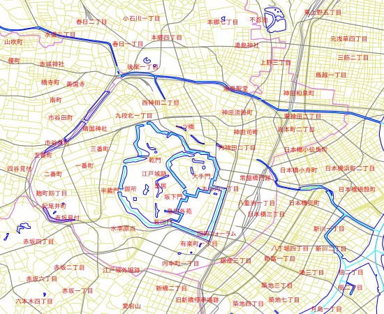

Display of International Characters in MapServer¶
- Author:
Jeff McKenna
- Contact:
jmckenna at gatewaygeomatics.com
- Last Updated:
2026-03-29
Credit¶
Initial functionality was added to MapServer 4.4.0 as a part of a project sponsored by the Information-technology Promotion Agency (IPA), in Japan. Project members included: Venkatesh Raghavan, Masumoto Shinji, Nonogaki Susumu, Nemoto Tatsuya, Hirai Naoki (Osaka City University, Japan), Mario Basa, Hagiwara Akira, Niwa Makoto, Mori Toru (Orkney Inc., Japan), and Hattori Norihiro (E-Solution Service, Inc., Japan).
Requirements¶
MapServer >= 4.4.0 (MapServer >= 7.0 for layer-level encoding)
MapServer compiled with the libiconv library
How to Enable in Your Mapfile (MapServer >= 7.0)¶
The MapServer 7.0 release contained changes in how MapServer handles encoding; new in 7.0 is that encoding is set at the LAYER level. This makes it much easier to manage having multiple layers in different encodings, in the same mapfile. The reason for this change was that the encoding of a dataset affects the whole layer, not only the labels. MapServer 7 will also convert any strings into UTF8 in the background, and any output (such as through OGC GetCapabilities, GetFeature, or queries) will be returned in UTF8.
The mapfile LAYER object’s ENCODING parameter accepts the encoding name as its parameter.
MapServer uses GNU’s libiconv library to deal with encodings. The libiconv web site has a list of supported encodings. One can also use the “iconv -l” command on a system with libiconv installed to get the complete list of supported encodings on that specific system.
Note
The label object’s ENCODING parameter is deprecated, but some logic still exists to handle that use in that scenario, in MapServer 7.
Step 1: Verify ICONV Support and MapServer Version¶
Execute mapserv -v at the commandline, and verify that your MapServer version >= 7.0 and it includes SUPPORTS=ICONV, such as:
> mapserv -v
MapServer version 7.7.0-dev (MS4W 4.0.4) OUTPUT=PNG OUTPUT=JPEG
OUTPUT=KML SUPPORTS=PROJ SUPPORTS=AGG SUPPORTS=FREETYPE
SUPPORTS=CAIRO SUPPORTS=SVG_SYMBOLS SUPPORTS=SVGCAIRO
SUPPORTS=ICONV SUPPORTS=FRIBIDI SUPPORTS=WMS_SERVER
SUPPORTS=WMS_CLIENT SUPPORTS=WFS_SERVER SUPPORTS=WFS_CLIENT
SUPPORTS=WCS_SERVER SUPPORTS=SOS_SERVER SUPPORTS=FASTCGI
SUPPORTS=THREADS SUPPORTS=GEOS SUPPORTS=POINT_Z_M SUPPORTS=PBF
INPUT=JPEG INPUT=POSTGIS INPUT=OGR INPUT=GDAL INPUT=SHAPEFILE
Step 2: Verify That Your Files’ Encoding is Supported by ICONV¶
Since MapServer uses the libiconv library to handle encodings, you can check the list of supported encodings here: https://www.gnu.org/software/libiconv/
Unix users can also use the iconv -l command on a system with libiconv installed to get the complete list of supported encodings on that specific system.
Step 3: Add ENCODING Parameter to your LAYER Object¶
Now you can simply add the ENCODING parameter to your mapfile LAYER object, such as:
MAP
...
LAYER
...
ENCODING "SHIFT_JIS"
CLASS
...
END #class
END #layer
END #map
Note
Make sure you save your mapfile in the “UTF-8” encoding in your text editor.
LAYER
NAME "地名"
DATA "chimei.shp"
STATUS DEFAULT
TYPE POINT
ENCODING "SHIFT_JIS"
LABELITEM "NAMAE"
CLASS
NAME "地名"
STYLE
COLOR 10 100 100
END
LABEL
TYPE TRUETYPE
FONT "pgothic"
COLOR 220 20 20
SIZE 7
POSITION CL
PARTIALS FALSE
BUFFER 3
END
END
END
Note
The MapServer 7.6.0 release included an important fix to allow special characters such as “ä” (umlauts) in filenames and paths in a mapfile.
Step 4: Test with the map2img utility¶

How to Enable in Your Mapfile (MapServer < 7.0)¶
Older MapServer versions only allowed encoding to be set at the LABEL level in the mapfile.
Add ENCODING Parameter to your LABEL Object¶
Add the ENCODING parameter to your mapfile LABEL object, such as:
MAP
...
LAYER
...
CLASS
...
LABEL
...
ENCODING "SHIFT_JIS"
END
END
END
END
Here is an example layer using the encoding set at the LABEL level:
LAYER
NAME "chimei"
DATA "chimei.shp"
STATUS DEFAULT
TYPE POINT
LABELITEM "NAMAE"
CLASS
NAME "CHIMEI"
STYLE
COLOR 10 100 100
END
LABEL
TYPE TRUETYPE
FONT "kochi-gothic"
COLOR 220 20 20
SIZE 10
POSITION CL
PARTIALS FALSE
BUFFER 0
ENCODING "SHIFT_JIS"
END
END
END
Example Using PHP MapScript¶
For PHP Mapscript, the Encoding parameter is included in the LabelObj Class (for MapServer < 7), so that the encoding parameter of a layer can be modified such as:
// Loading the php_mapscript library
dl("php_mapscript.so");
// Loading the map file
$map = ms_newMapObj("example.map");
// get the desired layer
$layer = $map->getLayerByName("chimei");
// get the layer's class object
$class = $layer->getClass(0);
// get the class object's label object
$clabel= $class->label;
// get encoding parameter
$encode_str = $clabel->encoding;
print "Encoding = ".$encode_str."\n";
// set encoding parameter
$clabel->set("encoding","UTF-8");
Notes¶
Note
During initial implementation, this functionality was tested using the different Japanese encoding systems: Shift-JIS, EUC-JP, UTF-8, as well as Thai’s TIS-620 encoding system.
Examples of encodings for the Latin alphabet supported by libiconv are: ISO-8859-1 (Latin alphabet No. 1 - also known as LATIN-1 - western European languages), ISO-8859-2 (Latin alphabet No. 2 - also known as LATIN-2 - eastern European languages), CP1252 (Microsoft Windows Latin alphabet encoding - English and some other Western languages).